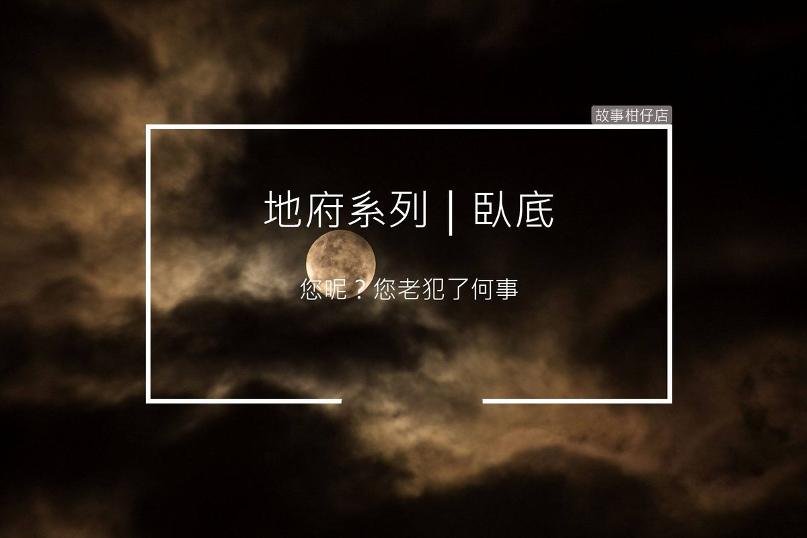

臥底

老闆：閻羅大人，您快去吧，下次再訪也行，我自己在這看看海。
閻羅王：做人做鬼都一樣，盡力就好，再晚一點這風可冷得很，回去吧。
〈臥底〉
「殺人放火倒是不眨眼，上個船哭爹喊娘的，這也才要到第五殿，你們還有得走！」長龍隊伍後，那位頭上長角，掛墨鏡、穿軍服的高大男人，一臉不悅地說著。
在叫罵聲中，一班臉上刻著字的亡魂，終於全搭上艘鐵船，駛向前方茫茫黑海。
此鐵船船高如樓，行進無聲，只聽見船中亡魂喊冤的喊冤、咒罵的咒罵，唯有船尾甲板一個男子手銬腳鐐腳，臉上印著個極字，閉口不語，兩眼無神，左手卻緊握著甚麼。
「殺父阿，確實麻煩。」一位老者蹲坐，輕輕在旁說著。
男子不甚搭理，左手只握得更緊，指甲都深陷掌中。
「如果再給你一次機會，還殺麼？」老者繼續問道。
「那畜牲，再來一次我還是殺。」男子憤憤回答。
「我知道你是為了母親跟妹妹。手裡的照片別再捏，捏久就壞了。」
男子望向老者，老者一頭花白，身形卻高大無比，批著件破斗篷，但雙眼卻炯炯如炬。
「您怎麼知道？」
「你被審時，我就在你後面，孽鏡台上我看的清清楚楚。」
「您呢？您老犯了何事？」男子問道。
「我阿，我讓許多人受盡苦楚，咳、咳。」
老者突然咳了起來，也不見停，聲音大到看守的夜叉都走了過來。
「夜叉大哥，行行好，給那老人個房間吧，在這甲板吹冷風，他怎受得了？」
「你當這裡是遊輪？一班惡人有船坐已是恩賜，不服自個下海遊去。」夜叉說完便走，男子向祂背影啐了一口，回頭便把自己身上的夾克脫了，便蓋在老者身上。
鐵船靠近岸邊，陸上亮晃晃之處便是第五殿所在，男子扶起老者，準備一同下船。
突然老者右手不知抓了甚麼塞進男子懷中後，便猛力推他落海。男子一落入海中，懷中竟跑出隻小龍，攫著他快速奔騰，一轉眼竟已到了孟婆處所。還未清醒，身旁一位穿西裝、帶墨鏡的小哥便附耳跟男子說著：「跟我走就好，別做聲。」接著便遞給孟婆一封信。
上頭寫著：「一念善惡，猶有可原，閻羅不忍，回人補過。」孟婆一見，便遞上湯。
男子喝下湯，手中的相片卻仍不肯放，過橋之時，只見本灰暗的前路，卻透下了一絲光束，柔柔地照在前方。
天靈靈、地靈靈、妖魔鬼怪都裝瓶！
鬼怪酸甘甜，都在故事柑仔店～